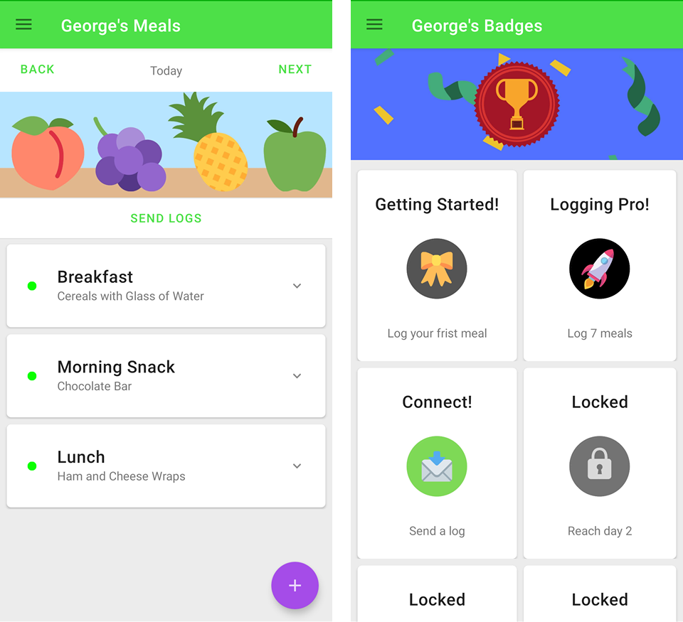
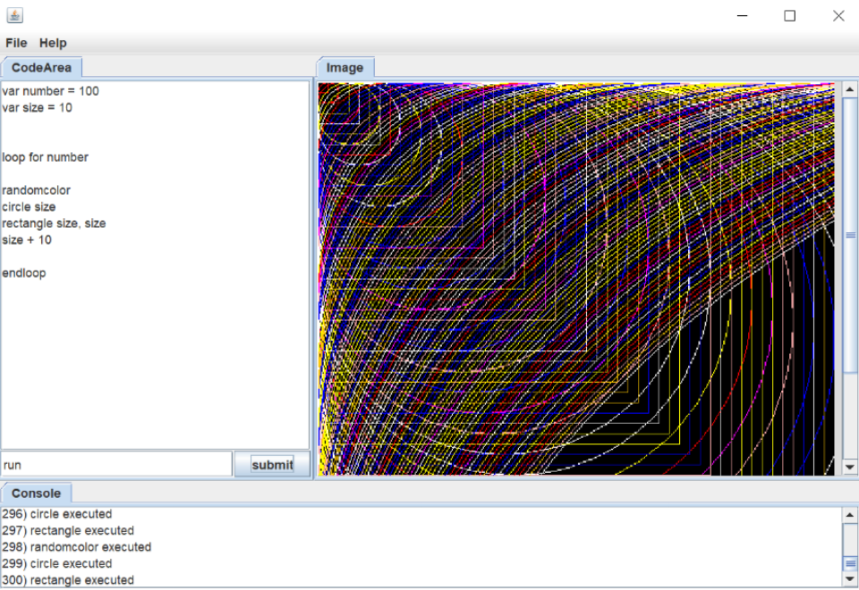
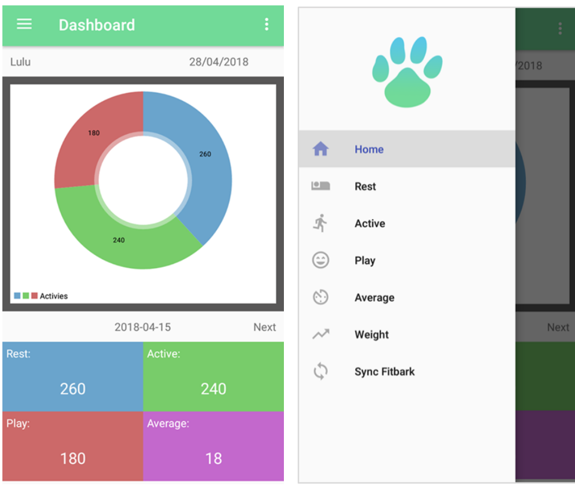
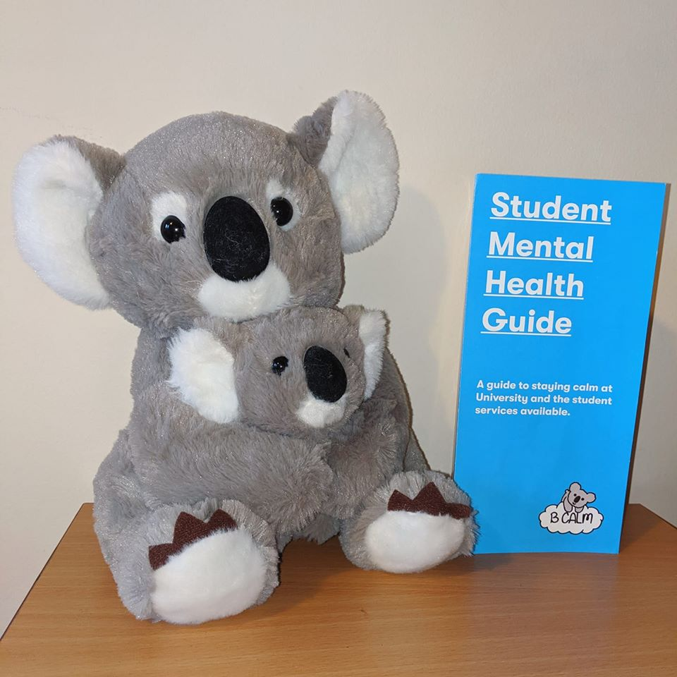

George Lloyd-Anderson

Projects

Eating Disorder Recovery App
Developed using a Material Design ApproachRenew aims to improve the user experience ofself-monitoring applications for eating disorders. The app is programmed in Java and was developed for my MENG Dissertation. The aim of the project was to improve user engagement within self-monitoring applications.

Custom Java Parser and IDE
Developed using Java for the Advanced Software Engineering module, The program is a GUI representation of an IDE allowing users to program loops, methods, variables and predefined commands to draw shapes to the screen. The program uses a parser convert the custom language into Java code. This project used Test Driven Development and the Singleton Design Pattern.

Paws: Dog Fitness Tracker
Developed for the 3rd year group Dissertation, the project aims to track a dogs activity levels using a FitBark and the FitBark API. My role in the project was the front-end development of the app, ensuring it scaled to diffrent resolutions and was simple to navigate.

BCalm Student Campaign
Designed to improve student mental health on campus, the BCalm Campaign focused on the creation of a new resource for students. The initial design was created by myself and made print ready by Leeds Beckett Students Union. To this date over 1000 flyers have been handed to students. The pdf of the final flyer can be found below.

Robotics TX40 Simulation
Developed for the Robotics module, the task required a VAL3 program to be written to allow the TX40 robot to draw the users initials to the screen, simulate a tool change and move a number of pegs. A video of the Simulation can be found by clicking the button below.